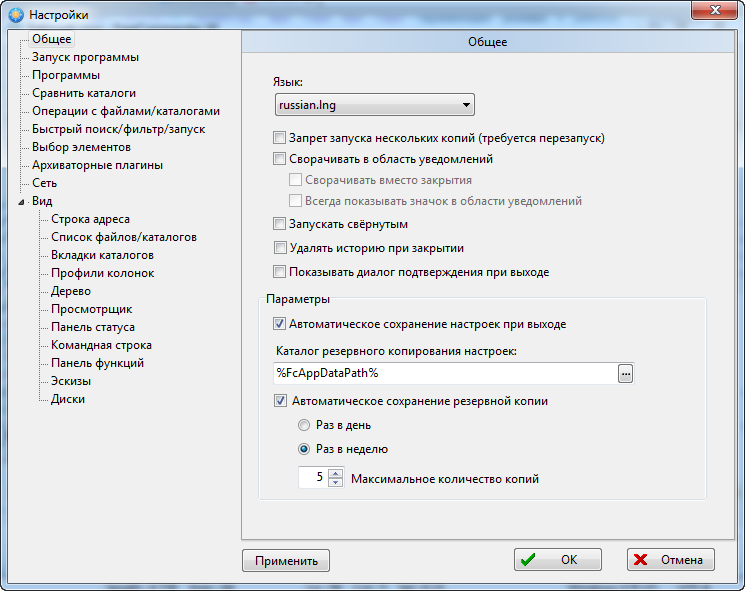
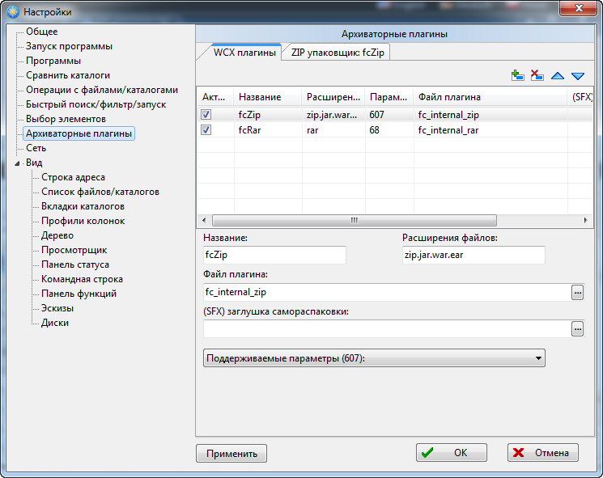

FreeCommander — двухпанельный файловый менеджер для Microsoft Windows, с поддержкой просмотра архивов, сравнением и синхронизацией каталогов, встроенным FTP-клиентом (только в версии 2009) и инструментом группового переименования файлов. В ней Вы можете найти все необходимые функции для управления Вашими данными. Одной из особенностей FreeCommander является необязательность инсталлирования, то есть, просто скопируйте установочную папку на CD или USB-флешку и работайте на другом компьютере.
Главное окно программы отдаленно напоминает Total Commander. Такое же двойная панель окна навигации. Но оформление выглядит относительно новее.
В головном меню предоставлено всё сдандартно, есть самые основные операции файловых менеджеров такие, как переименование, копирование, перемещение, открытие, сортировка, удаление, создание папок, поиск и навигация по разделам.
Так же можно добавить еще одну панель на дисплей с деревом папок.
Двойная панель позволяет с легкостью переносить или копировать папку или файла с одного раздела на другой. Ниже на скриншоте показываю перемещение папки "военка" с диска D на рабочий стол:
Так же в FreeCommander есть групповое переименование, операция называется соответственно "Multi rename". Тоже все довольно просто. Выбираем файлы для переименования, нажимаем на операцию, которую можно вызвать с помощью горячих клавиш или же из головного меню во вкладке "File". В открывшемся окне указываем новые названия файлов, в данном случае поставим счётчик и старое название, настройки счётчика не будем менять. Так же можно изменить формат времени. и нажимаем "Rename". Возможные результаты видно в верхнем панеле в режиме реального времени.
FreeCommander предлагает нам обширный возможности в настройках. Здесь приветствуется огромный выбор языка. Много настроек вида.
Настройки операций. Даже подключение архиваторных плагинов:


Основные функции FreeCommander по управлению файлами:
Подробно просмотреть про описание, возможности, лицензию FreeCommander, а так же скачать можете на официальном сайте разработчиков: http://freecommander.com